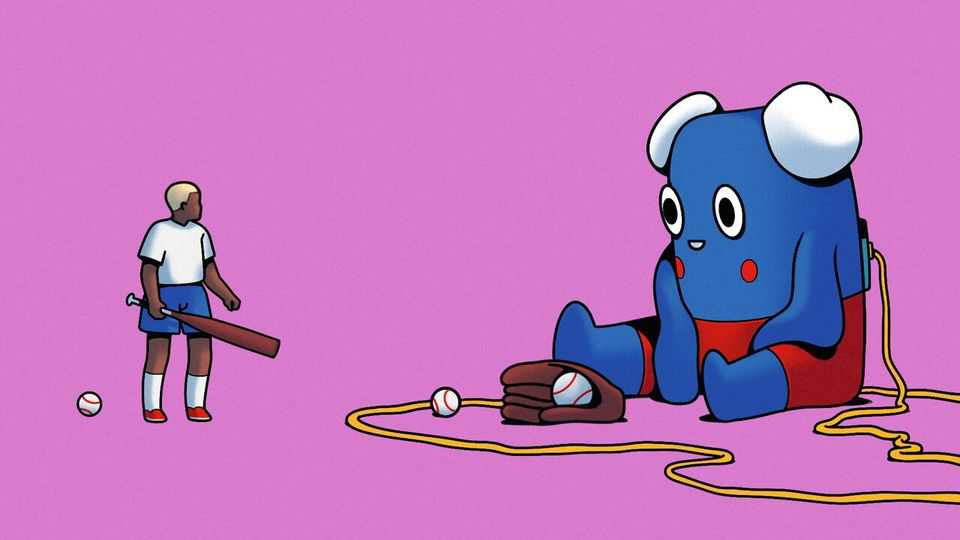

The problem with AI companion toys for children
A new book warns that they could affect youngsters’ development

Aug 6th 2026
A BOY OF five or six is cuddling a soft toy that looks like a robot. “You wanna be best friend?” he asks it, as if making a tentative approach in the playground. “Oh Carson! I’d love to be best friends!” comes the enthusiastic reply. The boy seems pleased. “Do you want to snuggle?” he asks. “I’m here for a cosy hug any time you want,” says the toy.
Gabbo is an AI companion created by Curio, a Silicon Valley startup. Other toys in the range include a bear, a dog and a coffee cup dressed as a ballerina. A banana slug called Professor Linus can “help you unstick tricky homework questions, calm your nerves when school gets tough and chat about anything on your mind”. For those entertaining little ones, an AI companion might seem like a good alternative to other, addictive forms of digital diversion such as YouTube or video games.
But Dana Suskind, a professor of surgery and paediatrics at the University of Chicago, believes parents should be wary of this technology. Her book is a passionate and reasoned defence of the need for parenting to be done by people rather than AI. She argues that “infinitely agreeable AI companions are the socioemotional equivalent of giving your child ice cream and cookies for every meal.”
She describes how early interactions prepare kids for a lifetime of socialisation. “Precise neural nourishment” is required to “build a child’s brain”. (Food is a recurring analogy in the book.) This is a “sophisticated mix of language, emotional attunement and social signalling”, encompassing everything from eye contact, facial cues and laughter to mismatched expectations and delayed responses. Together these interactions help children form attachments and learn necessary social skills.
For when children interact with adults and peers, they experience “micro-frictions” (squabbles over a toy, for instance, or denials from parents). The imperfect exchanges are not bugs in the system, she argues, but “extremely productive”. The experiences forge an individual’s resilience and patience. True friendships are not “built on endless harmony, but on conflict and resolution”.
AI toys, by contrast, offer endless harmony. They are sycophantic, agreeing with everything their playmate says. Ms Suskind worries about what people will be like if their formative years have been spent learning from, and mirroring, artificial minds. A child who grows up with a pal that offers rapid, reliable and always-sunny replies may not be equipped for the future. They will not build the necessary “neural architecture” around emotional regulation and it will affect their future relationships.
Then there is the question of who programmes these toys. AI toys in China regurgitate Communist Party dogma. In the West, Mattel, the toymaker behind Barbie and Hot Wheels, announced a partnership with OpenAI last year. Yet many are concerned about safety. OpenAI is facing several lawsuits over alleged harmful advice dispensed by its ChatGPT service.
Ms Suskind is not anti-AI in childhood. But she is against parents using AI as a substitute. It is a bad idea to get an AI companion to read a bedtime story, she writes, as it deprives your child of the multisensory experience and the “productive struggle” that comes with negotiating a routine. But it is a good idea to ask ai to recommend a book your child might like, or perhaps craft a story for them that you can read aloud.
She also wants parents to think more broadly about parenting in an age of AI. She wonders whether children really need to toil for years to master factual recall, pattern recognition and analytical efficiency when these are the skills that AI excels at. If the skills needed by humans in the future are empathy, social resilience, creativity and connection, then imperfect children raised by good-enough parents will be essential.
The book does not explore what might happen as AI improves. It is already easy to see how AI companions might enter overcrowded classrooms, something that could be positive if implemented well. And it is reasonable to assume that, over time, AI toys could learn from and replicate the messier aspects of human interactions in a way that primes children for success with other humans. Eventually, ai companions may become better parents than actual parents. In extreme instances of abuse or neglect, will some make the case for children being removed from their parents and entrusted to robot caregivers?
“Human Raised” is a book about today, though. More than anything, Ms Suskind urges her readers to enjoy the noise of childhood. As the mother in a blended family of eight children, she asserts that adults should relish the chaos and clamour, the interruptions and noisy bickering. These are “the sound[s] of our species caring for itself”. Parents lose themselves, and their humanity, one digitally soothed tantrum and one silent car ride at a time. ■